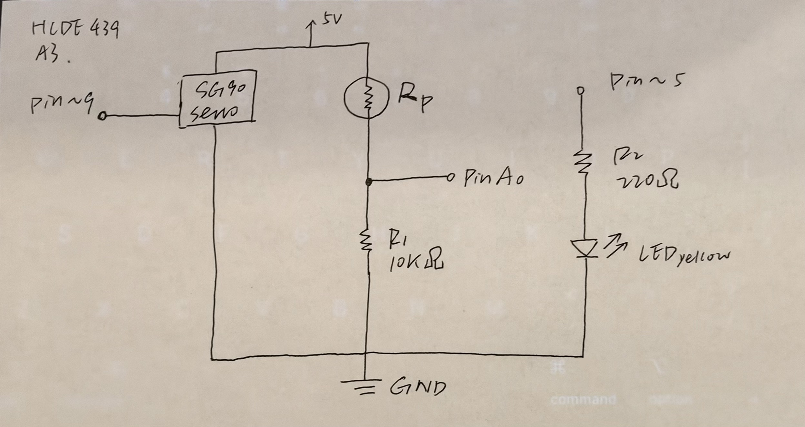
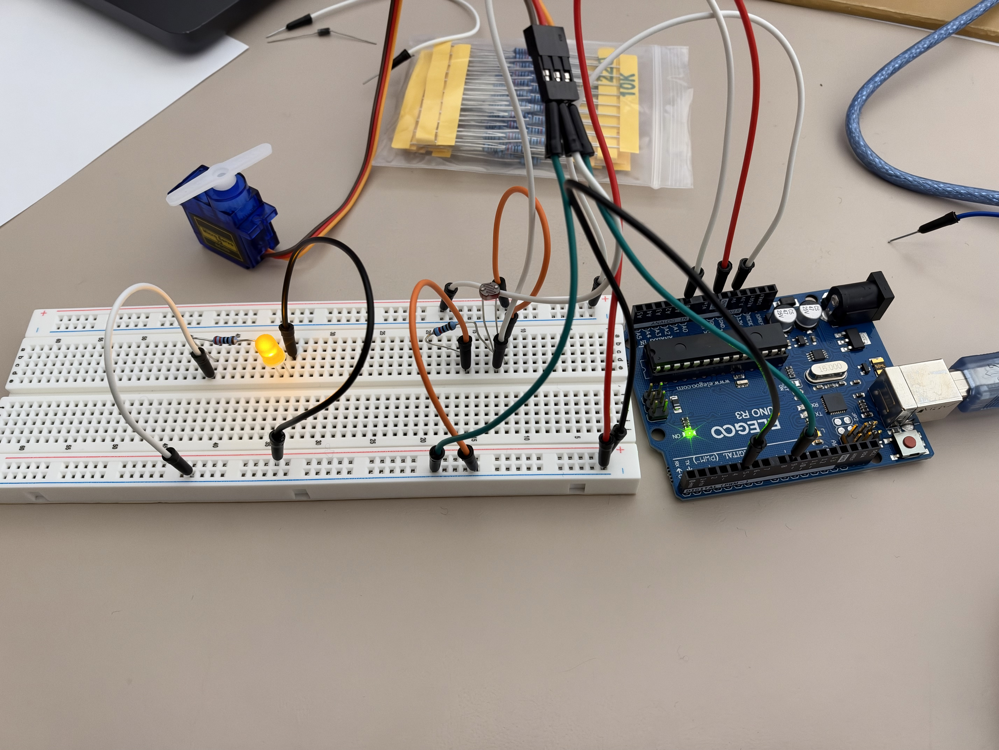
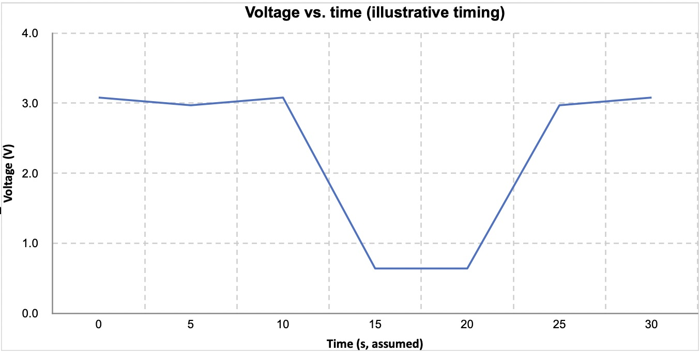

For this assignment, I built a smart blinds prototype using an Arduino UNO, a photoresistor, a servo motor, and a yellow LED. The photoresistor senses changes in ambient light. Based on the sensor reading, the servo moves between two positions to represent opening or closing the blinds, while the LED changes brightness.
Collaborators: None

The photoresistor and a fixed 10kΩ resistor form a voltage divider. The photoresistor connects to 5V, the fixed resistor connects to GND, and the point between them connects to analog input A0.
The servo signal connects to D9, with power from 5V and GND. The yellow LED connects to PWM pin D5 through a 220Ω current-limiting resistor, then to GND. All components share a common ground.
My code uses analogRead() to read the light level from the photoresistor through pin A0. I used map() to convert sensor readings between 350 and 550 into LED brightness values from 0 to 255, and analogWrite() to control the LED on pin D5.
I also used an if statement to control the servo motor. When the sensor reading is greater than 500, the servo moves to 90 degrees to simulate closing the blinds. Otherwise, it moves to 0 degrees to simulate opening them.
I used a narrower mapping range to make the LED brightness changes easier to see. The constrain() function keeps the LED brightness value between 0 and 255.
#include <Servo.h>
Servo myServo;
// Pins for the light sensor, servo, and LED
const int lightPin = A0;
const int servoPin = 9;
const int ledPin = 5;
void setup() {
myServo.attach(servoPin);
pinMode(ledPin, OUTPUT);
Serial.begin(9600);
}
void loop() {
// Read the light level from the photoresistor
int brightness = analogRead(lightPin);
// Convert the light reading to an LED brightness value
// Use 350-550 based on the range I observed during testing
int ledBrightness = map(brightness, 350, 550, 0, 255);
ledBrightness = constrain(ledBrightness, 0, 255);
// Adjust the LED brightness based on the light level
analogWrite(ledPin, ledBrightness);
// Close the blinds when it is bright, open them when it is dark
if (brightness > 500) {
myServo.write(90);
} else {
myServo.write(0);
}
// Print the readings so I can check them in Serial Monitor
Serial.print("Light: ");
Serial.print(brightness);
Serial.print(" LED: ");
Serial.println(ledBrightness);
delay(300);
}

I assembled the circuit using an Arduino UNO, a breadboard, a photoresistor, a 10kΩ resistor, a servo motor, a yellow LED, and a 220Ω resistor. The photoresistor is the input sensor, while the servo and LED are the outputs.
I tested the components separately before combining them into one circuit. During testing, the LED worked on its own but stopped responding properly to PWM when I added the Servo library.
I learned that the Servo library uses Timer1 on the Arduino UNO, which affects PWM on pins D9 and D10. I moved the LED from D10 to D5, and both outputs were then able to work together.
I used a 10kΩ resistor with the photoresistor to form a voltage divider. Since the Arduino reads voltage rather than resistance directly, the fixed resistor allows changes in the photoresistor's resistance to be measured as changes in voltage.
I chose 10kΩ because it is a common value for photoresistor voltage dividers and provides a useful voltage range while keeping the current low.
For example, if the photoresistor also has a resistance of 10kΩ, the output voltage is:
Vout = Vin × R2 / (R1 + R2) Vout = 5 × 10 / (10 + 10) Vout = 2.5V
The current through the voltage divider would be:
I = V / (R1 + R2) I = 5V / 20,000Ω I = 0.00025A I = 0.25mA
These calculations use an assumed photoresistor resistance. During testing, I measured output voltages ranging from approximately 0.6V to 3.0V as the light level changed.
I used a 220Ω resistor to limit the current flowing through the yellow LED. I assumed a 5V Arduino output, an LED forward voltage of approximately 2V, and a target current of 20mA.
Using Ohm's Law:
R = (V_supply - V_f) / I R = (5V - 2V) / 0.020A R = 3V / 0.020A R = 150Ω
Based on this calculation, a 150Ω resistor would allow approximately 20mA. I chose a higher resistance of 220Ω to further limit the current while still allowing the LED to light up.
I = (V_supply - V_f) / R I = (5V - 2V) / 220Ω I = 3V / 220Ω I ≈ 0.01364A I ≈ 13.64mA
The estimated current is approximately 13.64mA, below the assumed 20mA operating current. This is the theoretical full-on current. When PWM is used to dim the LED, its average current is lower at smaller duty cycles.
In the video, I demonstrate how the circuit responds to changes in light. I cover the photoresistor to reduce the amount of light reaching it, then uncover it to increase the light level again.
As the light level changes, the servo moves between two positions to simulate opening and closing the blinds. The LED brightness also changes based on the sensor reading.
Yes, the photoresistor can be used as either R1 or R2 in a voltage divider. Both arrangements work, but they produce opposite relationships between light and output voltage.
The voltage divider equation is:
Vout = Vin × R2 / (R1 + R2)
In my current circuit, the photoresistor is R1 and the fixed 10kΩ resistor is R2.
In dim light, assuming the photoresistor has a resistance of 40kΩ:
Vin = 5V R1 = 40kΩ R2 = 10kΩ Vout = 5 × 10 / (40 + 10) Vout = 1.0V
In bright light, assuming the photoresistor resistance decreases to 2kΩ:
Vin = 5V R1 = 2kΩ R2 = 10kΩ Vout = 5 × 10 / (2 + 10) Vout ≈ 4.17V
When the photoresistor is R1, more light decreases its resistance and increases the output voltage.
If I switch their positions, the fixed 10kΩ resistor becomes R1 and the photoresistor becomes R2.
In dim light:
Vin = 5V R1 = 10kΩ R2 = 40kΩ Vout = 5 × 40 / (10 + 40) Vout = 4.0V
In bright light:
Vin = 5V R1 = 10kΩ R2 = 2kΩ Vout = 5 × 2 / (10 + 2) Vout ≈ 0.83V
When the photoresistor is R2, more light decreases the output voltage instead.
Both configurations can create the same smart blinds behavior if I reverse the mapping and adjust the servo condition in my Arduino code.
The 40kΩ and 2kΩ photoresistor values are hypothetical examples rather than measured resistance values.
I measured the voltage at the output of the photoresistor voltage divider using a digital multimeter while changing the amount of light reaching the sensor.
Under normal lighting, I observed voltages between approximately 2.97V and 3.08V. When I covered the photoresistor, the voltage dropped almost immediately to around 0.64V.
The change happened so quickly that it was difficult to capture intermediate readings using the multimeter.
The graph below shows the voltage change over time, using the readings that could be observed during the experiment.

The Arduino UNO uses a 10-bit ADC, which gives readings from 0 to 1023, and 8-bit PWM, which uses values from 0 to 255.
If I had a 16-bit ADC, the input range would increase to 0–65535. With 10-bit PWM, the output range would increase to 0–1023.
For a full-range mapping, the original function would be:
map(sensorValue, 0, 1023, 0, 255);
The new function would be:
map(sensorValue, 0, 65535, 0, 1023);
Since my actual code uses an input range of 350–550, I would also need to scale these values to the 16-bit ADC range to preserve approximately the same voltage thresholds.
350 × 65535 / 1023 ≈ 22422 550 × 65535 / 1023 ≈ 35234
The new mapping for my specific program would be approximately:
map(brightness, 22422, 35234, 0, 1023);
I would also constrain the output between 0 and 1023 instead of 0 and 255.
The higher ADC resolution would allow smaller changes in the input voltage to be represented, while higher PWM resolution would provide more possible brightness levels.
Yes, I used ChatGPT to help me understand and troubleshoot parts of my Arduino code.
When I first tested my circuit, I noticed that the LED brightness barely changed when I covered the photoresistor. I asked ChatGPT why this was happening, and it helped me understand how the map() function affects LED brightness.
Initially, I was mapping a much larger input range (0–1023) to a smaller output range (80–255). ChatGPT suggested narrowing the input range to 350–550 and mapping it to 0–255, so that changes in the light sensor reading would produce a more noticeable change in LED brightness.
I also used ChatGPT to help me understand the voltage divider. At first, I thought that a lower voltage from the photoresistor would directly make the LED dimmer. Through our discussion, I learned that the voltage divider provides an input to the Arduino, while the LED output is controlled separately through the code.
ChatGPT also helped me generate and debug parts of the Arduino code, including resolving a PWM pin conflict between the servo and LED, and to organize my calculations and HTML documentation.
I built and tested the circuit myself and measured the voltage using a multimeter. Overall, AI helped me better understand how sensor readings are translated into output behavior.